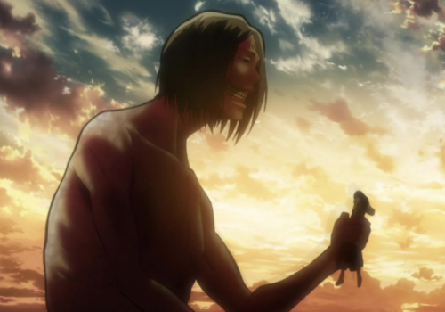
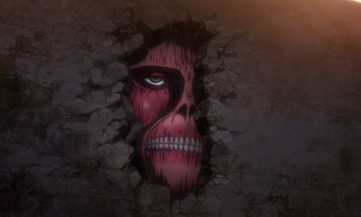
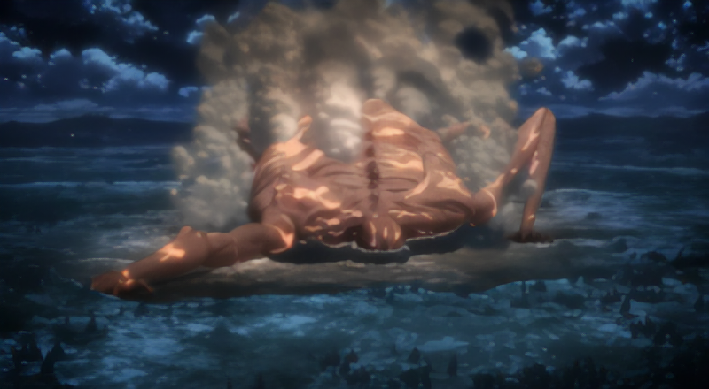
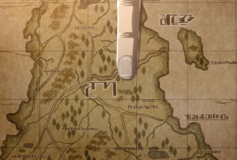

Сюжет аниме
В центре событий «Атаки титанов» находятся трое героев: сын врача Эрен Йегер, его приемная сестра Микаса Аккерман и их друг детства Армин Арлерт. В начале манги титаны под предводительством невиданных ранее разумных «колоссального титана» и «бронированного титана» вторгаются в их родной округ Шингашина, проломив ворота во внешней стене — мать Эрена и Микасы погибает, а сами они вместе с Армином вынуждены искать укрытия за внутренними стенами. При этом отец Эрена, Гриша Йегер, перед отъездом оставляет сыну таинственный ключ от подвала в захваченной титанами Шингашине. Эрен клянется отомстить титанам, и все трое вступают в ряды армии.
{kind=link}
Действие возобновляется спустя пять лет, когда подросшие герои выпускаются из военного училища. Герои вместе со своим учебным классом находятся в округе Трост — укрепленном южном поселении у второй стены. Трост, как и Шинганина, подвергается нападению титанов; вооруженная УПМ армия пытается противостоять им, но терпит поражение, и часть солдат, включая Эрена, съедают титаны. Спустя некоторое время на помощь людям приходит новый разумный титан, враждебно настроенный по отношению к сородичам — позже герои признают в нём Эрена, открывшего в себе способность временно превращаться в титана. Командование использует неожиданного союзника-титана, чтобы отбить Трост и заделать пробоину в воротах. Эрена судят как представляющего потенциальную опасность для человечества, но его берет под свое крыло разведотряд под началом Эрвина Смита и капитана Леви, и друзья Эрена также вступают в это подразделение.
Разведотряд в новом составе отправляется за стены, в экспедицию к разрушенной Сингансине, но в дороге подвергается нападению ещё одного, ранее не виданного разумного «титана-женщины» — это существо не только превосходит других титанов скоростью и силой, но способно управлять ими с помощью крика. Герои обнаруживают, что разумный титан — оборотень, как и Эрен, и совершают неудачную попытку захватить врага в плен; титан-женщина демонстрирует воинскую выучку и — в человеческом облике — умение пользоваться УПМ. Хотя экспедиция терпит поражение, по возвращении за стены герои в состоянии вычислить настоящую личность титана-женщины — это Анни Леонхарт, в прошлом курсант из того же учебного класса, что и они сами. Разведотряд устраивает Анни ловушку в округе Стохесс у внутренней стены — в развернувшейся битве титанов Эрен одерживает над Анни верх. Герои обнаруживают, что внутри защищающих города стен также находятся спящие титаны.
Вскоре разведотряд вынужден выступить для отражения новой угрозы — появления титанов между внутренними стенами Роза и Сина, что может говорить о прорыве второй стены где-то за пределами Троста. Герои сталкиваются с новым разумным титаном — «титаном-обезьяной» или «звероподобным» — и обнаруживают в собственных рядах ещё троих скрытых оборотней. Если Бертольт и Райнер — уже знакомые по повествованию «колоссальный» и «бронированный» титаны — находятся внутри стен с некоей тайной миссией, третий титан-оборотень Имир находится вне их планов и неохотно помогает им похитить Эрена. Разведотряду и военной полиции путём огромных потерь удается отбить Эрена у титанов, при этом Эрен обнаруживает способность управлять титанами с помощью крика — так же, как это ранее делала Анни.
Вскоре происходит новое похищение — на этот раз Эрена и другого бойца, девушку Кристу, захватывают люди из так называемого «Центрального отдела» военной полиции, приказы которым отдают лишь члены королевской семьи. К этому времени разведотряд осознает, что королевское правительство многое знает о титанах и оборотнях, и вступает с ним в противостояние, даже планируя и осуществляя вместе с другими военными государственный переворот. Как выясняется, «Криста» — Хистория Рейсс, наследница настоящей королевской династии Рейссов, в то время как царствующий король является лишь марионеткой. Рейссы также являлись оборотнями, передавая от одного к другому силу «первого короля» — способность сверхъестественным образом управлять не только титанами, но и людьми. Отец Эрена, Гриша Йегер, уже будучи оборотнем, сумел завладеть даром «первого короля» (съел Фриду Рейсс в обличии титана, сводную сестру Хистории), а затем передать его сыну — в результате в Эрене находится сила двух титанов, сила «Атакующего титана», и сила «Титана-короля». Хистория отказывается подчиняться собственному отцу Роду и наследовать дар, что для неё означало бы превратиться в титана и съесть Эрена заживо — Род превращается в огромного, 120-ти метрового титана сам, но разведотряду удается справиться с ним. Хисторию коронуют как новую законную королеву.
{kind=link}
Уладив проблемы внутри стен, разведотряд выступает в новую экспедицию к внешней стене — найти и уничтожить титанов-оборотней, а также добраться до подвала в Сингансине, где, как полагают герои, находится разгадки тайн. Отряд добирается до Сингансины, но попадает в ловушку — их подстерегают целая армия титанов и «обезьяна», «колоссальный» и «бронированный» титаны, они же оборотни Зик, Бертольт и Райнер. В долгом бою почти весь разведотряд погибает, хотя и оставляет за собой поле боя. Имея возможность сделать оборотнем одного из своих товарищей, герои вынуждены выбирать между тяжело раненными Эрвином и Армином и выбирают последнего, дав командиру Эрвину умереть, а Армину — унаследовать силу "колоссального титана" Бертольта. Они вскрывают дверь подвала и находят внутри дневники Гриши Йегера и фотографию — образец технологии, не существующий в известном героям мире внутри стен.
Хотя ранее герои полагали, что человечество за стенами было уничтожено титанами, на самом деле во внешнем мире есть и другие города и страны, откуда прибыл отец Эрена. Стены находятся на изолированном острове Парадиз, в то время как континентом по ту сторону пролива правит государство Марли. Некогда марлийский народ — «обычные» люди — находился в рабстве у элдийцев, потомков королевы Имир: только элдийцы могут превращаться в титанов, и среди них передаются уникальные дары оборотней. За сто лет до событий манги марлийцы свергли власть элдийцев и загнали своих врагов в гетто; элдийские короли сохранили свою власть лишь на острове внутри трех колец стен. Гриша Йегер был членом подпольного движения элдийцев, а Зик — его сыном от первого брака. Когда движение было раскрыто, Гриша и его товарищи были сосланы на остров и превращены в неразумных титанов, но другой член подполья, Эрен Крюгер, носитель силы «атакующего титана», помог Грише сбежать и передал ему эту силу, которую Гриша позже передал сыну. Герои восстанавливают контроль над внешней стеной Мария и готовятся к неизбежной войне с марлийцами.
{kind=link}
Действие перемещается на четыре года вперед: марлийская армия, в том числе Зик, Райнер и молодые солдаты-элдийцы на службе Марли, сражается с новым противником — Ближневосточным союзом. Хотя Марли одерживает победу в сражении благодаря применению титанов, превосходство человеческой военной техники над титанами Марли очевидно, и Зик заявляет своим командирам, что Марли не сможет удержать свое положение сверхдержавы, если не заполучит силы титанов с острова Парадиз.